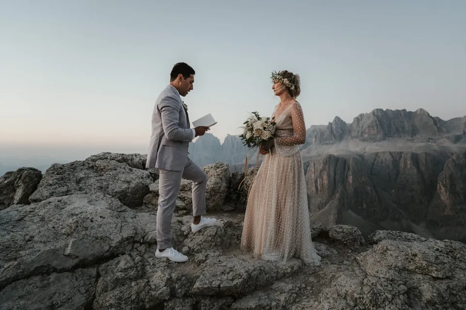

La stessa vetta è due luoghi diversi all'alba e al tramonto. L'alba vi compra solitudine, aria fredda e l'alpenglow rosato prima che la valle si svegli; il tramonto vi dà calore, un ritmo tranquillo e un cielo che brucia mentre se ne va. Nessuno è migliore — sono giornate diverse, e la scelta plasma in silenzio tutto: la sveglia, la fatica, la folla, l'atmosfera delle vostre foto. Ecco come aiutiamo le coppie a scegliere la loro luce, con i compromessi onesti e i luoghi che si addicono a ciascuna.
Vedetela come scegliere un carattere per la giornata. Un elopement all'alba è silenzioso e un po' eroico: vi alzate al buio, salite con la frontale e arrivate mentre la prima luce incendia le cime, spesso completamente soli. Un elopement al tramonto è generoso e rilassato: una lenta passeggiata pomeridiana, luce calda che indugia per un'ora e una cena di festa che aspetta a valle. Tutto il resto — come vi vestite, dove andate, quante persone potete portare — discende da quell'unica decisione, ed è per questo che la prendiamo per prima.

Partire prima dell'alba è la cosa più vicina che conosciamo ad avere le montagne per voi. L'inizio del sentiero è vuoto, l'aria è tagliente e ferma, e quando il sole sale la roccia passa dal grigio al rosa all'oro in pochi minuti — l'alpenglow che nessun filtro può fingere. C'è una quiete a quell'ora che cambia il modo in cui le persone stanno e parlano; le promesse all'alba escono più morbide e vere, perché non c'è nessuno per chilometri davanti a cui recitare.

Vi chiede qualcosa: una sveglia da qualche parte tra le 03:00 e le 05:00 a seconda del mese, una camminata al buio e strati caldi per una vetta che può essere vicina allo zero anche a luglio. Perlustriamo il sentiero il giorno prima, lo percorriamo con voi con la frontale e calcoliamo la salita così da essere in posizione con luce in anticipo. La ricompensa è una versione delle montagne che quasi nessuno vede — e foto con una qualità di luce che il pieno giorno semplicemente non può dare.

Il tramonto è la scelta indulgente, e non c'è vergogna in ciò — alcune delle nostre giornate più belle finiscono nella luce invece di iniziarvi. Niente sveglia; vi preparate a un'ora civile, salite nel pomeriggio e lasciate che la luce venga a voi. L'ora dorata in montagna è lunga e generosa, la calda luce laterale che avvolge volti e roccia, e scivola nello spettacolo di fuoco dell'enrosadira, quando le pareti dolomitiche brillano di un rosso brace per pochi minuti irripetibili.

Il prezzo è la compagnia. I buoni punti panoramici vuoti all'alba possono essere affollati al tramonto, quindi vi indirizziamo verso lembi e prati meno noti, o verso luoghi dove la folla si dirada nel momento in cui scende l'ultima funivia. Il tramonto corre anche contro l'orologio nell'altra direzione: la luce cala in fretta, e non volete ritrovarvi a cercare il sentiero al buio per sbaglio. Pianifichiamo la discesa con la stessa cura della salita — o, nelle nostre serate preferite, prenotiamo un rifugio così non dovete scendere affatto.

Allora, qual è il vostro? Scegliete l'alba se l'immagine nella vostra testa è solitudine — cime vuote, luce rosa morbida, una cerimonia privata con nessuno nell'inquadratura tranne voi. Sceglietela anche se volete i luoghi più drammatici nella loro versione più tranquilla, o se il caldo e la folla dell'estate vi scoraggiano. Scegliete il tramonto se le mattine proprio non fanno per voi, se portate qualche invitato a cui una partenza alle 4 del mattino peserebbe, o se volete che la giornata finisca nel calore e in una cena invece di iniziare al freddo. Quando una coppia davvero non riesce a decidere, a volte facciamo entrambi in due giorni — un tramonto per ambientarsi, un'alba per l'evento principale.
È anche questione di temperamento. L'alba premia la coppia che ama una missione condivisa — la sveglia, la salita, la ricompensa si sentono guadagnate, e la giornata inizia su un'euforia che colora tutto ciò che viene dopo. Il tramonto si addice alla coppia che vuole assaporare, non faticare: un lungo pranzo, una passeggiata senza fretta e il tutto che si scioglie in una cena. Nessuno dei due è più romantico; sono romantici in tonalità diverse. Diteci quale suona come voi e vi diremo con onestà se il vostro luogo dei sogni può offrirlo.
Orari locali approssimativi per le Dolomiti (zona di Cortina d’Ampezzo). Cime alte e pareti della valle possono spostare la luce reale di 20–40 minuti, quindi pianificate sempre un margine.
| Mese | Alba | Tramonto |
|---|---|---|
| Maggio | 05:45 | 20:40 |
| Giugno | 05:25 | 21:05 |
| Luglio | 05:40 | 21:00 |
| Agosto | 06:10 | 20:25 |
| Settembre | 06:45 | 19:25 |
| Ottobre | 07:20 | 18:25 |
L’ora d’oro — la luce morbida e calda — cade all’incirca nei 30–40 minuti dopo l’alba e prima del tramonto. Gli orari sono in ora legale dell’Europa centrale (CEST); a fine ottobre si torna indietro di un’ora.

L'alba si addice ai luoghi che raggiungete prima che parta la macchina della giornata. Il Lago di Braies è il classico: liscio come uno specchio e vuoto alla prima luce, molto prima della folla — tenete presente che dal 1° luglio al 15 settembre la strada di accesso richiede una prenotazione anticipata tra le 09:00 e le 16:00, un altro motivo per cui preferiamo esserci all'alba. Le Tre Cime di Lavaredo si raggiungono con la strada a pedaggio di Auronzo, che in estate (all'incirca da fine maggio a fine ottobre, secondo stagione e meteo) è percorribile nelle prime ore, così potete salire al buio ed essere sulle cime per il primo colore. Il pedaggio dell'auto è di circa 40 €, e può essere richiesto un biglietto online in anticipo — a questo pensiamo noi.

Le creste come la Seceda sono l'eccezione che conferma la regola: la prima cabina sale verso le 08:30, troppo tardi per il colore dell'alba, quindi una vera alba sulla Seceda significa o una salita con la frontale al buio o una notte in un rifugio vicino. Sembra tanto, e lo è — ma stare su quella cresta mentre si tinge di rosa, con la funivia ancora a ore dalla prima corsa, è una delle grandi esperienze che queste montagne offrono. Lo proponiamo solo alle coppie a cui piace l'idea di guadagnarselo.

La sera predilige i punti panoramici che raggiungete in funivia e lasciate nel calore — idealmente quelli dove potete prendere l'ultima cabina di discesa o, meglio ancora, dormire in cima. La terrazza del Sass Pordoi, il Lagazuoi con il suo rifugio a strapiombo, la distesa dell'Alpe di Siusi e la Nordkette proprio sopra Innsbruck catturano l'ora dorata magnificamente e si svuotano nel momento in cui i gitanti tornano a casa. L'unica regola è conoscere la vostra ultima discesa: controllate l'orario dell'ultima funivia al minuto, e dove non c'è un'opzione tardiva prenotiamo semplicemente il rifugio e ne facciamo una notte.

I prati meritano una menzione speciale per il tramonto. Dove una cresta può essere ventosa ed esposta al calare della temperatura, i pascoli aperti dell'Alpe di Siusi o una tranquilla spalla di valle restano dolci sotto i piedi e brillano magnificamente quando la luce laterale rastrella l'erba. Sono facili da raggiungere, facili da percorrere e indulgenti se portate invitati o un abito più lungo — un atterraggio morbido per la fine della giornata.
Aiuta conoscere i nomi di ciò che inseguite. L'alpenglow è la sfumatura dal rosa al violetto sulle cime nei minuti prima dell'alba e dopo il tramonto, quando il sole è ancora sotto l'orizzonte. L'ora dorata è la luce calda, bassa e lusinghiera nei 30–40 minuti subito dopo che il sole supera la cresta o poco prima che cali. L'enrosadira è il miracolo proprio delle Dolomiti, il bagliore rosso brace che il pallido calcare restituisce al tramonto e all'alba. E l'ora blu, la finestra fresca e quieta dopo che la luce calda se n'è andata, è quella che la maggior parte perde smontando troppo presto — noi mai.
Conoscere la sequenza ci fa costruire la giornata come un pezzo di musica. A un'alba fotografiamo prima il freddo alpenglow, poi le promesse quando arriva la luce calda, poi ritratti sciolti e gioiosi una volta che il sole è ben alto. A un tramonto lo facciamo al contrario: ritratti nella generosa luce dorata, la cerimonia sincronizzata con l'enrosadira e i quieti fotogrammi dell'ora blu per chiudere. Le stesse cime, ritmo opposto — e una volta che sapete quale ritmo volete, l'intero piano si scrive quasi da sé.
La differenza pratica tra le due giornate riguarda davvero il buio e il tempo. Un'alba significa muoversi al buio: frontali per tutti, un sentiero che abbiamo già perlustrato, pile di scorta e guanti di cui sarete grati in cima. Un tramonto significa correre contro la luce che cala verso casa — o eliminare del tutto la corsa restando in quota. Contano anche le strade: la strada a pedaggio delle Tre Cime è aperta nelle prime ore in estate per l'accesso all'alba, mentre la maggior parte delle funivie serve solo il pieno giorno, ed è esattamente per questo che i luoghi dipendenti dagli impianti sono luoghi da sera.

Niente di tutto ciò vuole scoraggiarvi dalla partenza presto — vuole renderla senza sforzo. Portiamo noi il piano così voi portate solo l'emozione: perlustriamo, calcoliamo i tempi, portiamo la frontale di scorta e un thermos di qualcosa di caldo, e vi mettiamo in posizione con luce in anticipo. Portate qualche invitato a un'alba e istruiamo anche loro, così il gruppo si muove come uno al buio invece di disperdersi.

Vestitevi per l'ora, non per la cartolina. All'alba una vetta può essere vicina allo zero anche in piena estate, quindi facciamo a strati: l'abito o il completo che amate, con strati caldi e sfilabili sopra che si tolgono per le foto e si rimettono subito tra una e l'altra. Buone calzature per la camminata e le scarpe belle in una borsa; guanti e cappello che vivono in tasca finché la fotocamera non è giù. Il tramonto è più gentile ma non caldo — una volta che il sole se ne va, la temperatura cala in fretta, quindi la stessa regola vale un'ora dopo. Vi diciamo esattamente cosa aspettarvi per la vostra data, il vostro luogo e la vostra luce.

La luce stessa si muove nell'arco dell'anno, e cambia i conti. A giugno il sole è su prima delle 05:30 e tramonta dopo le 21:00 — notti corte e una sveglia brutalmente presto, ma le giornate più calde e lunghe. Entro ottobre l'alba scivola quasi alle 07:30 e il tramonto verso le 18:00, il che rende un elopement all'alba davvero civile e un tramonto autunnale splendidamente presto. I mesi di mezzo scambiano un po' di calore con orari più gentili e meno folla; la piena estate vi dà il tempo più mite e i sentieri più affollati. La tabella qui sopra ha i numeri — costruiamo la vostra mattina o sera attorno a essi.
Qualunque luce scegliate, non smontate quando svanisce. Dopo l'alba c'è una mattina morbida e limpida da godersi — una colazione in rifugio, un sentiero vuoto in discesa, l'intera giornata ancora davanti. Dopo il tramonto arriva l'ora blu, la finestra fresca e quieta quando il cielo si fa profondo e appaiono le prime luci in valle; sono i nostri dieci minuti preferiti per un ultimo, tenero fotogramma prima che si accendano le frontali. Poi la festa: una cena in rifugio, un giro tra i passi al buio, o semplicemente la discesa con un anello nuovo e nessun posto dove andare.

Onestamente, l'alba vince su luce e solitudine: cime vuote, alpenglow rosato e una cerimonia privata che nessuno può affollare. Il tramonto vince sulla comodità: niente sveglia, una salita rilassata e luce calda che indugia. Se ce la fate con la partenza presto, prendete l'alba; se le mattine non fanno per voi o avete invitati, il tramonto è la scelta affidabile e bella.
Dipende dal mese e dalla camminata — la sveglia di solito cade tra le 03:00 e le 05:00, prima a giugno, più tardi a ottobre. Perlustriamo il sentiero il giorno prima e calcoliamo la salita così da farvi arrivare al vostro luogo con luce in anticipo, e portiamo noi il piano così l'unica cosa che dovete fare è alzarvi.
No. Le prime cabine salgono troppo tardi per l'alba — la Seceda dalle 08:30 circa e la Nordkette sopra Innsbruck dalle 08:00 circa —, quindi una vera alba su una cresta significa o una salita con la frontale al buio o una notte in un rifugio. I luoghi sul ciglio della strada e le vette con strada a pedaggio sono la via più facile alla prima luce.
È più facile di quanto sembri quando è pianificato. Perlustriamo prima il sentiero di giorno, portiamo frontali di scorta e bevande calde, teniamo il gruppo unito e calcoliamo tutto con un margine. Per la maggior parte delle coppie la camminata al buio diventa una delle parti più belle della giornata — quieta, intima e piena di attesa.
È l'unica cosa da pianificare con cura. Dove siete saliti in funivia, controlliamo l'ultima discesa al minuto e vi teniamo in anticipo su di essa; dove non c'è un'opzione tardiva, prenotiamo semplicemente un rifugio così passate la notte e saltate del tutto la discesa. In ogni caso pianifichiamo la via del ritorno con la stessa cura di quella di salita.
Ogni mese ha il suo compromesso. Giugno ha le giornate più calde e lunghe, ma la sveglia più presto; settembre e ottobre portano orari d'alba civili, aria fresca e limpida e folla molto più rada, con il bonus dei larici dorati. La tabella qui sopra ha i numeri per ogni mese, e costruiamo la vostra mattina o sera attorno a essi.


Usiamo cookie per statistiche anonime (Google Analytics tramite Google Tag Manager) per migliorare il sito. L'analisi parte solo con il tuo consenso. Privacy